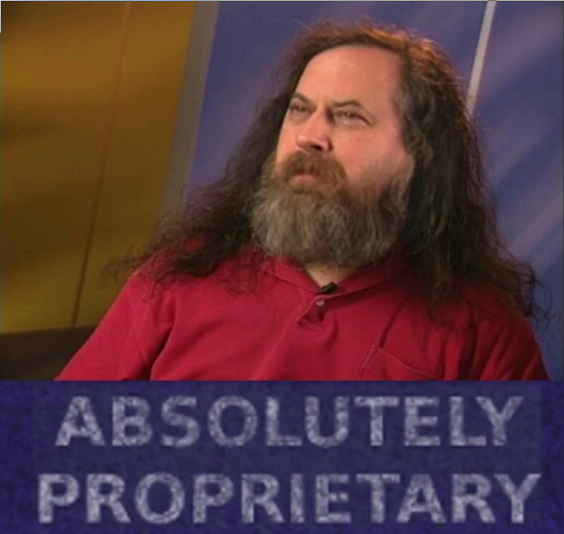
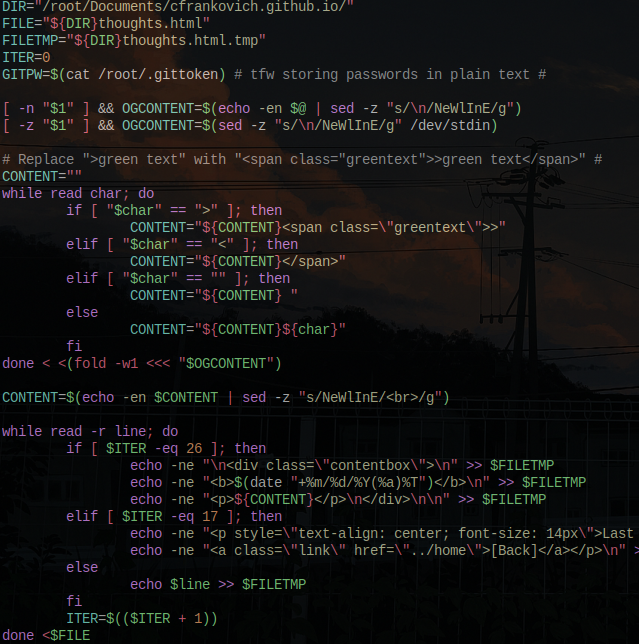
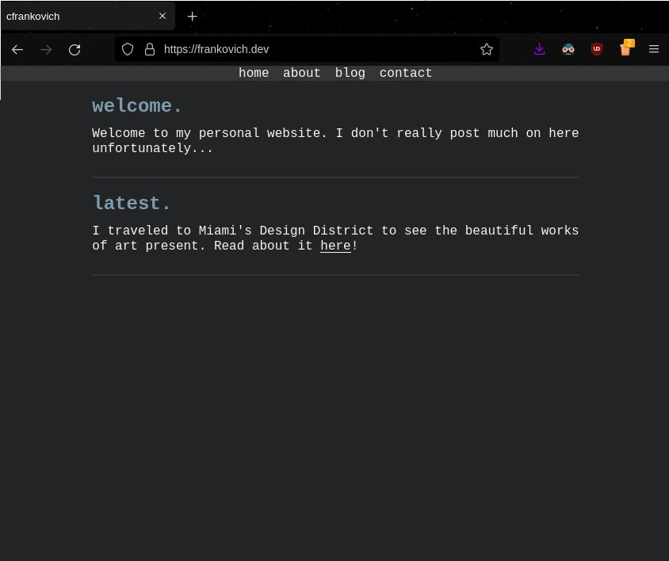

/blog/
Last Update: 03/11/2022 [Back]
[Catalog View] [Back]
carson 02/06/22(Tue)11:32:29 No.004 
File: catinsock.jpg (240 KB, 1109x1479)
I added a sticky on the other sections of the site so I'll add one here explaining the blogs.
The list view is horrible. Please don't use it. At the top, there is a catalog view button that makes it easier to view all blogs in a nice catalog so you don't have to scroll mindlessly.
These blogs have no specific subject and are just random thoughts that I expand on. I'm planning to add a reply or comment feature once I get my server up and running.
carson 03/11/22(Fri)01:42:46 No.008
File: AbsolutelyProprietary.png (536K, 693 x 656)
The following speech is a school project.
"Value your freedom or you will lose it" is a well known quote by Richard Stallman, a programmer and free software activist.
Stallman is an advocate founded the GNU project in 1983 with the goal to give the user control and freedom in their day to day computing activities.
The GNU project went on to be one of the most influential projects in computing history and is used in over 90% of computers today.
With the success of the GNU project, its philosophy spread creating a new movement for free software and even led to Stallman founding the Free Software Foundation.
Before I deliberate the case on proprietary software, we must first understand what free software is and isn't.
Free software is software which respects the users' freedom and community.
This is also called "libre software" to accentuate that it is about liberty, not price.
The freedom of having control over your own life is an unalienable right and was one of the key points in the United States' Declaration of Independence.
With the notoriety of technology, many use computers to carry out activities in their lives.
This attests that one's freedom depends on their ability to control the programs that they are using.
There are four essential freedoms that must be granted for software to be considered free.
The freedom to run the program for any purpose, study the program's source code, make and distribute exact copies, and make and distribute modified versions.
With these four freedoms, the user is in complete control of the program.
The first two freedoms respect the individual's control and the last two grant users to exercise collective control over the program.
If one of these are taken away the program becomes proprietary.
Freedom and liberty are binary.
You are either free to control the program or the program controls you.
With proprietary software, the developer or owner of a program that controls the program, has power over its users.
Therefore, this allows for the proprietor to make malicious versions of the program which users are not aware of.
There are many flaws and malicious features of proprietary software software but the three most prevalent are surveillance, back doors, and censorship.
Surveillance is by far the most ubiquitous trait found in proprietary software today.
Companies have been collecting data on it's users as long as the world wide web has existed.
There are even some companies like Meta who solely generate income from the monetization of their users' data and activities online.
This data is typically sold to marketing companies to maximize profits without respecting the user.
Spyware does not grant the user an option to consent or deny access to their data.
In addition, most of these programs won't even tell the user whether they snoop on the users for a government entity.
This invasion of personal privacy is an invasion on a peaceful state of mind and a breach on trust between the two parties.
There is no difference on whether the proprietor is a single developer, a company, or a government because the proprietor will inevitably use the users' personal data for their own benefit and greed.
Surveillance can also be the cause of a back door.
Frankly, all of proprietary software's malicious functionalities are mediated by back doors.
Back doors are features of a program which allows for unauthorized access to either data or the computer itself.
One example of a program back door is Amazon's Kindle.
In July of 2009, Amazon decided to remove a copy of "Nineteen Eighty-four" and "Animal Farm" by George Orwell from all Kindles.
Naturally, users where outraged by this because they paid for the e books and did not receive a refund.
This signifies that Amazon has full control of the user's and their property and made Kindle users on edge wondering if their favorite book will also be removed.
In more recent times, Adobe decided to kill off Adobe Flash Player by blocking Flash content.
In January 2021, Adobe Flash Player's time was finally up and suddenly stopped working without an update.
This indicated that Adobe had access to every Flash Player and who knows what other things Adobe had done with such a popular program.
Google Chrome is dominating the market share of browsers with over 2.65 billion people around the world using it.
Most users decide to install an ad blocker through the chrome web store extensions page when setting up their browser to get rid of advertisements to be more productive and reduce surveillance.
However, in 2017 Google went on a censoring spree banning many ad blockers from the chrome web store and uninstalling these on their users' computers.
Censorship does not only mean restricting programs on a computer, it could also be defined as restricting ones speech and representation.
This is typically seen in social media sites like Twitter, Instagram, and Facebook.
With the power these companies have by deleting and suspending posts or users, they can shape public opinion with ease.
Political opinions aside, it is important to remember that what is considered as "right" and "wrong" are in complete control of the proprietor on these sites meaning that these sites are a perfect medium in which governments can spread propaganda.
For example, the Russian government is utilizing the proprietary software to censor people in support of Ukraine.
And in some countries like China, they utilize proprietary software to completely eliminate opposing opinions thus eliminating the individual's right to think for themselves and develop their own opinion.
In conclusion, if the four essential freedoms are implemented and practiced with software, the dangers of proprietary software will cease to exist.
It's time to realize that you are not in control of your technology or anything you do online.
Proprietary software will always have a noxious nature to it and the continued growth of people understanding the free software philosophy will hopefully present a new light for people around the world to break the chains between them and the proprietor who controls their software and computing activities.
carson 02/12/22(Sat)14:22:05 No.007
File: ollie.webm (388K, 480x472)
Last night, I finally landed my first ollie. The said ollie is obviously in the webm attached to this post (its a little loud careful).
For the past week or so, I've tried to learn to long board since I think its a fun and stylish mode of transportation that I want to take with me to university. Once I learned to do basic maneuvers, I got bored since there was nothing else to really do on a long board.
I wanted to pick up a skateboard but I also didn't want to spend any extra money if I didn't have to. Luckily, my friend had an old skateboard just lying around his garage collecting dust so naturally I asked him if I could have/borrow it and that's how I ended up with my board!
I've kinda been lazy when it comes to skateboarding since I've wanted to do it for a long time. I don't really know what inspires me to skate but I love watching skateboarding videos in my free times if that counts.
Since I've already watched skateboarding videos (for a couple years... kinda sad now thinking about it) before I knew what tricks to chase first and methods to practice them. Long boarding for around a week also helped me get comfortable with standing on a piece of wood with four wheels underneath so I already knew how to rid so I already knew how to ride.
I immediately started working towards landing my first ollie so I could have a solid foundation for other cool tricks. I've practiced it for 2 days (2/10 and 2/11) and I've landed a few ollies but I was lacking consistenc started working towards landing my first ollie so I could have a solid foundation for other cool tricks. I've practiced it for 2 days (2/10 and 2/11) and I've landed a few ollies but I was lacking consistency.
>can you ollie over stuff?
no. still cant be consistent while rolling/moving but thats what im planning to work on today.
I don't want to make this post giant but I also finished the blog script so hopefully it works because this post is the first time I'm using it in a non-testing environment.
carson 02/08/22(Tue)00:09:36 No.005
File: thoughtscriptss.png (524 KB, 639x644)

I worked on a script for an extended period of time to make something easier for the first time ever. The something is uploading thoughts to my >>>/thoughts/ page.
Yes, it does seem like a simple task but this is literally the first time I've written a bash script this long. It was the first time I've used sed outside of vim and I tried to not write horrible code.
The process began when I got home from school and as I was doing my homework, I took breaks in between to work on the script which was a HORRIBLE IDEA!
I was literally trying something new and breaking my thought process as I'm learning. Never doing that again.
If you would like to void my horrible explanation of the code, just look bellow and you'll find the massive chunk of code I use to upload thoughts.
Essentially, upon running the program, I can either use the standard input or arguments I pass it which contain the message.
The things that I look out for in the message are \n(newline), >, and <.
These special characters dictate new lines and quotes within the message or text I want to post.
I replace all the new lines with br's with sed -z "s/\n/br/g" (except i use the angle brackets too) so there are new lines in the message.
After this, the script turns into an anomaly by looping through each character of the message and when I reach the angled brackets, I replace it with the html syntax to make it green.
The "closing" angle bracket is used to conclude the quote instead of a new line.
After the finding and replacing is done, I simply just replace the file with the new one and push the changes to github. If you want to see the code go to the full blog page which is at >>/blog/005/ if you're interested.
The script is really useful and typing/editing html is a big pain in the rear so I'm planning to replicate this but for the blog and music section of the site too.
carson 02/01/22(Tue)11:32:29 No.002
File: rickowens.jpg (280 KB, 960x1792)
Today was one of the coolest days I've had in a while. I ventured down to Miami's Design District to see high end fashion up close and in person.
I mainly went down there to see my favorite fashion brand's stores (Rick Owens, Celine, and Chrome Hearts) but I also had quite the experience doing everything else there.
It all started this morning when I was in my car about to go to school. I was talking to a friend about how I was bummed out about a number of things and going to school would make matters worse.
I wanted to clear my mind and venture out from where I live to go see life instead of repeating the same old school once again. I decided to go visit the design district to see those stores I previously mentioned to motivate me to work harder in life and to get a taste of what high end fashion is.
After making sure I was ready, I headed out of the school parking lot curious to see what lie ahead. The first thing I noticed was the horrible traffic involved getting to the city.
Not only was the time to get to my destination was increased but the pollution and littering was horrible.
It was depressing seeing the amount of cars traveling all emitting exhaust as they travel to their destination.
I'm not really an environmental guy but it really broke me seeing animals becoming accustomed to the city lifestyle as they walked across the hot asphalt and ate trash off the ground.
Anyways, I eventually made it to the district and I was blown away by the area and how different it was compared to home. Now granted, this was regarded as a really artistic and fancy place so naturally the area was inevitably going to be nice but I could tell it was something special.
I found some parking and made my way out of the car to get a closer look at some stores and artwork. Unfortunately, it was early in the morning (9am) so all of the stores were closed but their windows had outfits and clothes for the passer by to see.
All of the stores here are much different than your average retail experience. These high end stores were not just a store, but also a work of art. There were no signs and extra things that scream "buy me!" near the shop.
There was one "store" that simply had a table and four chairs on the inside with one knocked over. Some of these stores made me question why these companies would even rent this space out to not display anything or be minimal but I soon realized that this was the aesthetic of the whole area and modern fashion.
I visited a coffee shop during my stay and expected the prices to be ridiculously high but to my surprise, it wasn't terrible. I had a cup of coffee for only three (US) dollars and the people inside were nice to me.
Even though the coffee shop was next to these stores I mentioned, it still had that same artsy feel.
All of these stores acted like the owner's canvas making each building unique but also felt similar due to the artistic nature of each building. Nothing felt out of place here and even the bright and colorful nature of the coffee shop next to the eerie, sinister look of Rick Owens looked normal.
Bellow are two close up photos I took and I'm now realizing I should have taken more but I'm more of a memory guy than a photo one.
carson 01/31/22(Mon)17:42:54 No.001
File: oldwebsite.png (52 KB, 844x708)

This is the first time I've updated this website since December 3rd, 2021. I've always wanted to kind of talk to myself here and blog so I can come back in the future and read these but I never had anything to talk about.
However, today I have something to talk about. I've been wanting to do this for a while now and writing this blog post will motivate me to do it even more.
I want to completely move this website and all of my github repositories on my own server. Will it be annoying? Probably. Will it be hard to set up? Yes. I have no idea what I am doing.
However, this is what I love about technology. You never stop learning anything and there is always something new and cool you can do. For me, it just happens to be setting up a git and web server.
Now thinking about it, I might download all of my favorite music and store it on the server just incase it gets taken down (I listen to a lot of unreleased songs that aren't supposed to be available).
Aside from the learning opportunity, I will be breaking the chains that big tech companies have on me. As of now, I am completely dependent on proprietary software and big tech to keep this website up.
Using my own server will allow me to have full control of my own stuff without the fear of my data being harvested or worse, my website and code completely wiped from existance with no reason.
Now realistically, I am just being a little paranoid but there is no harm in doing this.
Regarding the hardware that my server will be running on, the laptop has a 4 core Intel i5-2450M clocked at 3.1GHz, 4GB of RAM, and 500GB of storage.
Obviously, this isn't the best of the best but its better than nothing! I don't plan on upgrading or spending more money just to upgrade a server that might get around 3 visits a month.
To wrap things up about the server, I am really excited to research and learn about possible security problems, how I can efficiently serve html to clients wanting to connect, and possibly learn to serve music to clients if possible.
{kind=link}
{kind=link}
{kind=link}
{kind=link}
{kind=link}